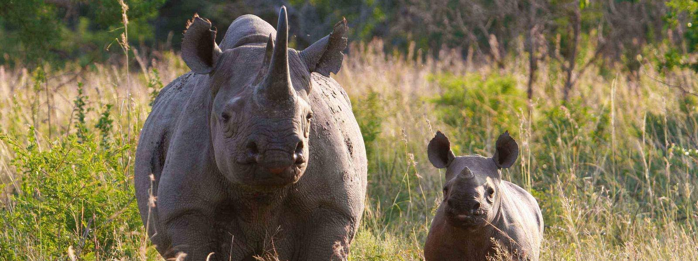
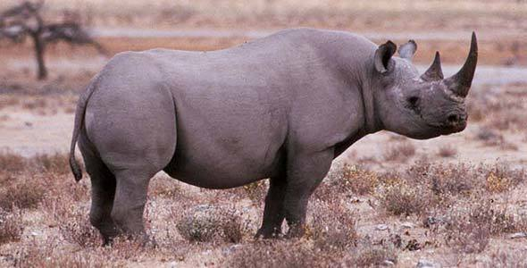
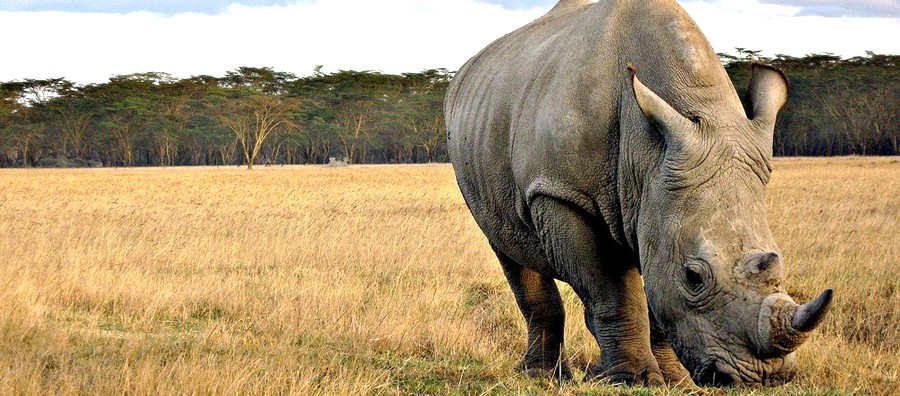
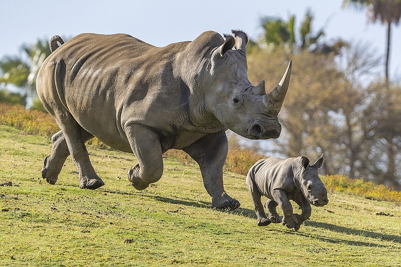

RHINO

Critical endangered Sumatran Rhino moved to new home
|
Last month, the Indonesian Government announced that a first Sumatran rhino, a female named Pahu, was successfully rescued from a small isolated forest patch in Kalimantan, with the support of WWF, local partners and Sumatran Rhino Rescue. |
|  |
In a blow to wildlife ,China lifts a ban on the use of tiger and rhino parts
n an enormous setback for wildlife conservation, China announced it will allow hospitals to use tiger bone and rhino horn from captive-bred animals for traditional medicine. The decision reverses a decades-old ban that has been instrumental in preventing the extinction of endangered tigers and rhinos. |
|  |
Protecting the elusive Sumatran rhinoThe Sumatran rhino is so rare and elusive that even the most senior of the rangers have never seen the animal in the wild. But just because you don’t see something doesn't mean it’s is not there. |
Helping people and wildlife thrive togetherHuman-wildlife conflict is a major issue for many poor people who live near forests in rural areas of Nepal. That’s one of the reasons why WWF and other partners in conservation launched the Hariyo Ban (Green Forest) program to find lasting solutions that protect people’s lives, livestock and crops and prevent the retaliatory killing of wildlife. |

|
|  |
Greater one -horned rhino moved to new home in NepalA greater one-horned rhino found a new home in Nepal’s youngest national park after the government, with the support of WWF and partners, successfully moved the adult male from the country’s thriving Chitwan National Park. |